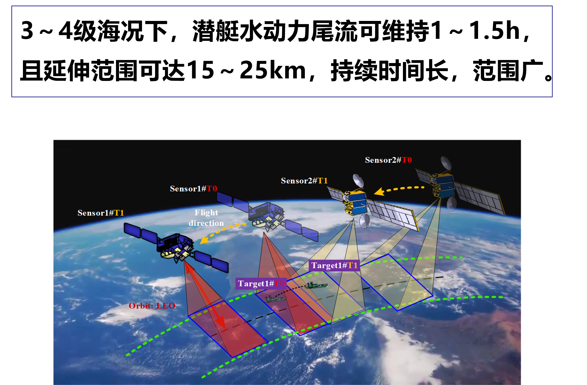
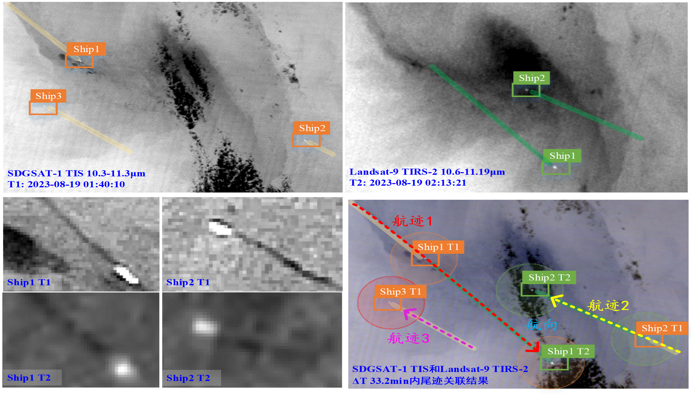
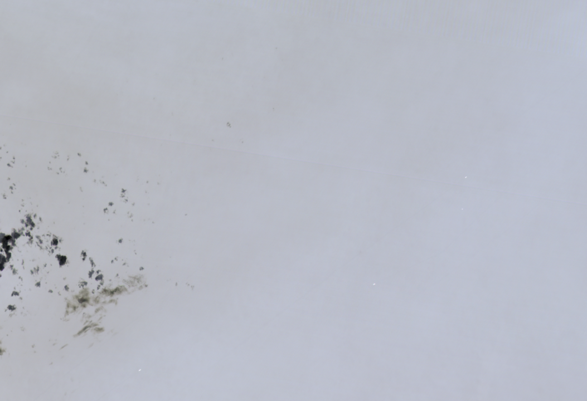
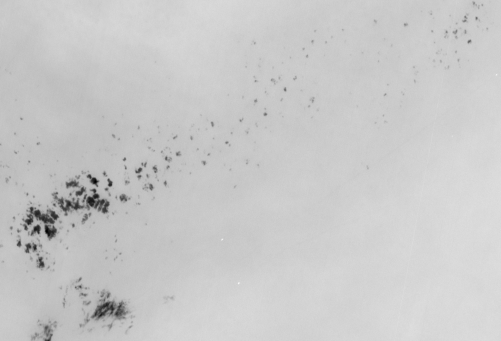
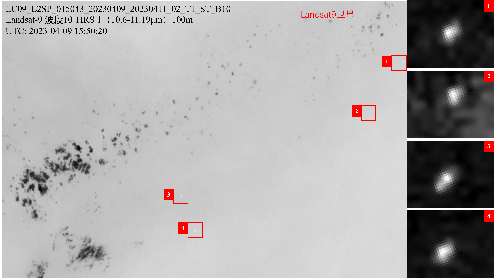

海洋遥感案例
双星观测关联下的尺度效应思考
天基平台多源数据整合——基于相似性度量的识别技术，推进低轨多星海上目标航迹关联。
研究要点
3～4级海况下，潜艇水动力尾流可维持1～1.5h，且延伸范围可达15～25km，持续时间长，范围广。


图1-2：利用 Landsat-9 和 SDGSAT-1 TIS 热红外遥感影像基于相似性度量的海战场航迹关联算法
通过整合不同轨道高度的卫星观测数据，提高资源利用效率和卫星应用的整体效益，增强天基信息系统高时敏连续跟踪能力。
双星关联检测
结合单星数据与双星数据关联的检测结果，基于相似性度量的识别技术，推进低轨多星海上目标航迹关联，实现更好的态势检测性能。


图3-4：原始 SDGSAT-1 观测影像与检测结果


图5-6：原始 Landsat 观测影像与检测结果
多尺度关联检测结果
图7：SDGSAT-1 与 Landsat 观测影像尺度关联检测结果
结合以上分析，可以认为：单星观测的不足，通过双星多尺度的互补，能实现态势检测能力的提升。但双星观测信息的融合机理有待进一步研究。